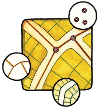
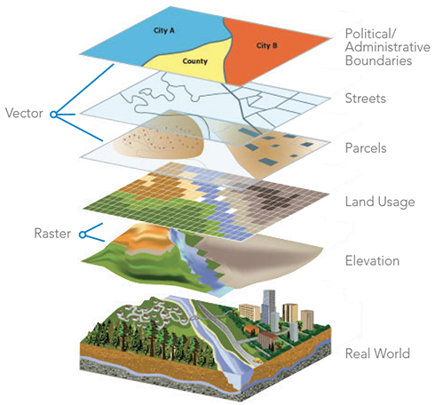
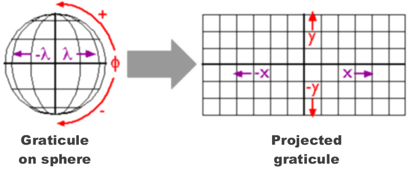
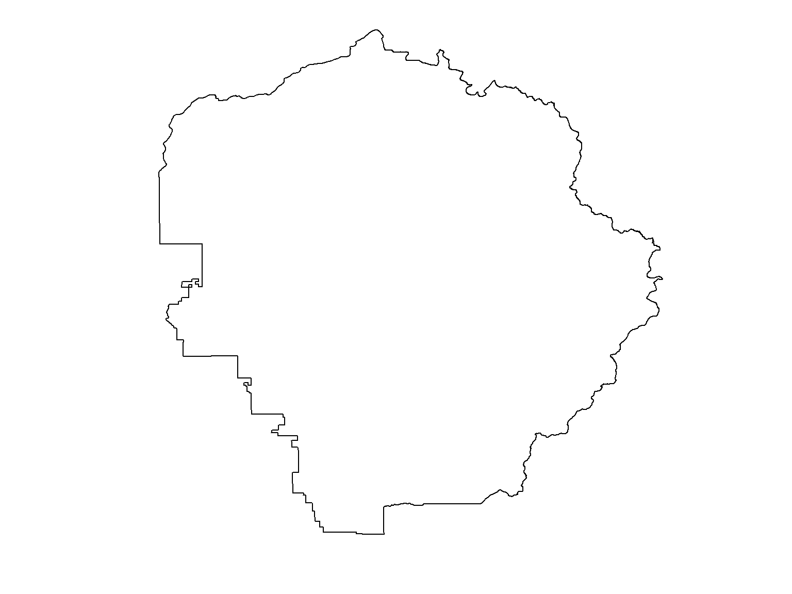
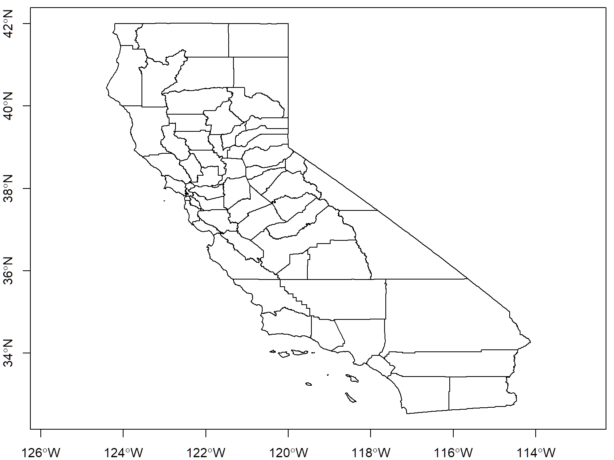
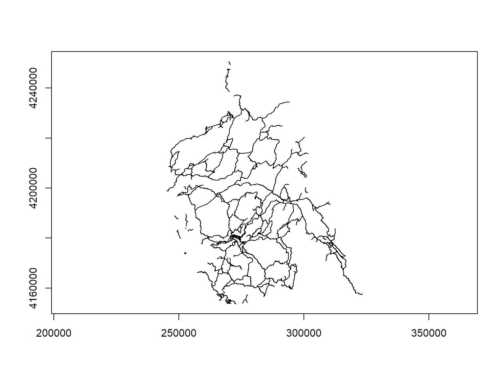
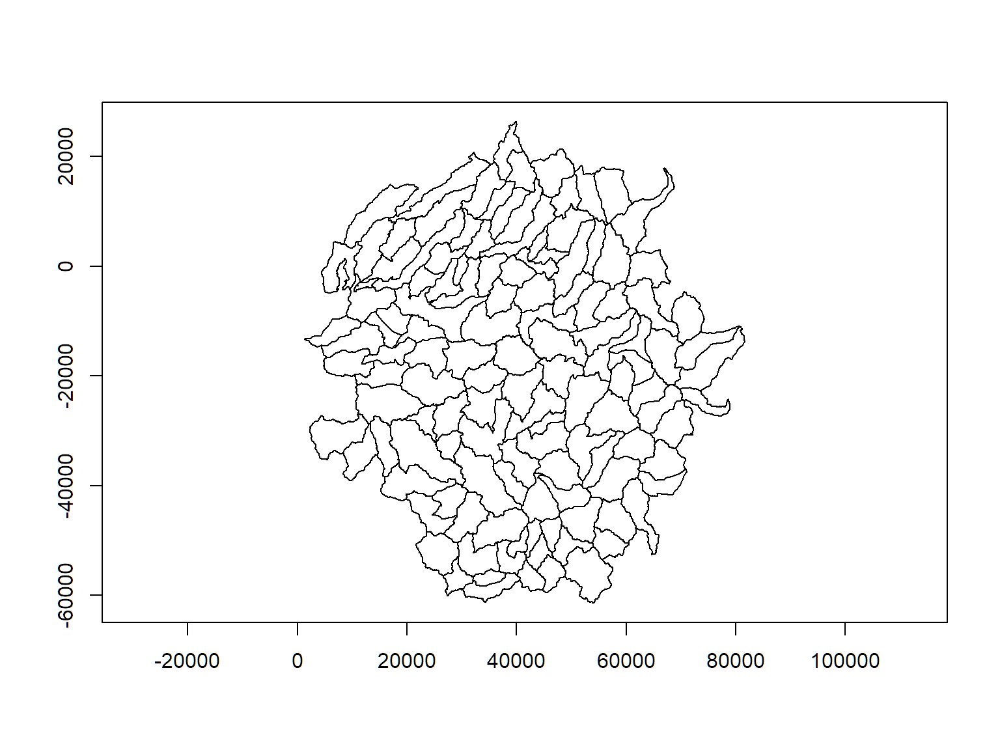

Spatial Data Analysis with R
SCGIS Conference, 2019
Importing and Basic Plotting of Vector Data

Geospatial Data
Physical World → GIS World

Projections

UTM
A common projection system is Universal Transverse Mercator (UTM). UTM divides the planet up into 60 zones that are 6 degrees wide. The USA falls in zones 10-19.
sf Package
sf is a relatively new package for working with vector data. It combines the functionality of the older sp package, as well as select functionality from rgdal and rgeos.
sf stands for ‘simple features’, which is a standard (developed by the Open Geospatial Consortium) for storing various geometry types in a hierarchical data model.
A ‘feature’ is just a representation of a thing in the real world (e.g. a building, a city…).
sf offers numerous specific benefits, including:
- fast IO (Input and Output)
- enhanced plotting
- excellent integration with common R data structures (using data.frames)
- integration with the tidyverse packages and %>% piping syntax
- consistent function names (all starting with st_)
- objects are supported by an increasing number of other geospatial packages
- alignment with other software that uses the simple features data model (e.g. QGIS, PostGIS), or an analogous one (e.g. Python’s Geopandas)
Importing Vector Data
Sources and Layers
To import spatial data, you have to specify the source and layer.
Sources can be a:
folder: "./gis_data"
geodatabase (which is really a folder): "./gis_data/yose_roads.gdb"
file: "trail_heads.kml"
database connection: "PG:dbname=postgis"
In functions, the argument for the source is often named dsn (data source name)
Layers can be a:
Shapefile name (minus the shp extension)
layer name in a database
Import Functions
The two main functions for importing vector data are:
st_layers(source) returns the names of avilable layers in a source
st_read(source, layer) import into R
Most of the functions in the sf package start with st_, which stands for ‘space time’, and matches the names of similar functions in PostGIS.
Import the boundary for Yosemite National Park
Let’s import the Yosemite park boundary (which happens to be a Shapefile).
First we list all the layers in the datasets folder.
## Driver: ESRI Shapefile
## Available layers:
## layer_name geometry_type features fields
## 1 ca_counties 3D Polygon 58 13
## 2 veg37 Polygon 6512 26
## 3 Yosemite_POI Point 2720 30
## 4 yose_boundary Polygon 1 11
## 5 veg37_alliances NA 39 3
## Reading layer `yose_boundary' from data source `C:\Workshops\R-Spatial\rspatial_mod\outputs\rspatial_scgis19\docs\data' using driver `ESRI Shapefile'
## Simple feature collection with 1 feature and 11 fields
## geometry type: POLYGON
## dimension: XY
## bbox: xmin: -119.8864 ymin: 37.4947 xmax: -119.1964 ymax: 38.18515
## epsg (SRID): 4269
## proj4string: +proj=longlat +datum=NAD83 +no_defs
To view the metadata of a layer before brining it into R, use rgdal::ogrInfo()
Because Shapefiles only contain one layer, you can combine the source and layer in the dsn argument:
See what type of object we just created:
## [1] "sf" "data.frame"
We see that yose_bnd is both a sf object as well as a data.frame. This means we should be able to use the functions designed for either of those objects.
Type the name of the object at the console.
What coordinate reference system is it in? [Answer]
## Simple feature collection with 1 feature and 11 fields
## geometry type: POLYGON
## dimension: XY
## bbox: xmin: -119.8864 ymin: 37.4947 xmax: -119.1964 ymax: 38.18515
## epsg (SRID): 4269
## proj4string: +proj=longlat +datum=NAD83 +no_defs
## UNIT_CODE
## 1 YOSE
## GIS_NOTES
## 1 Lands - http://landsnet.nps.gov/tractsnet/documents/YOSE/METADATA/yose_metadata.xml
## UNIT_NAME DATE_EDIT STATE REGION GNIS_ID UNIT_TYPE
## 1 Yosemite National Park 2016-01-27 CA PW 255923 National Park
## CREATED_BY METADATA
## 1 Lands http://nrdata.nps.gov/programs/Lands/YOSE_METADATA.xml
## PARKNAME geometry
## 1 Yosemite POLYGON ((-119.8456 37.8327...
Ans. unprojected geographic coordinates (long-lat).
The names() function returns the column labels of a data frame (in this case the attribute table).
## [1] "UNIT_CODE" "GIS_NOTES" "UNIT_NAME" "DATE_EDIT" "STATE"
## [6] "REGION" "GNIS_ID" "UNIT_TYPE" "CREATED_BY" "METADATA"
## [11] "PARKNAME" "geometry"
Take note of the last column - geometry. That’s where the geometry is saved (we’ll come back to that later).
Basic plotting sf objects
To plot just the geometry of a sf object (i.e., no symbology from the attribute table), we can use the st_geometry() function.

The asp=1 argument sets the aspect ratio. It is optional but generally a good idea for spatial data.
Import a KML
kml & kmz files can have more than one layer. Hence the source is the kml file, and you must specify the layer by name.
Let’s import a kml containing the National Register of Historic Places in Yosemite in Yosemite.
## [1] TRUE
## Driver: KML
## Available layers:
## layer_name geometry_type features fields
## 1 yose_historic_places Point 35 2
## Reading layer `yose_historic_places' from data source `C:\Workshops\R-Spatial\rspatial_mod\outputs\rspatial_scgis19\docs\data\yose_historic_pts.kml' using driver `KML'
## Simple feature collection with 35 features and 2 fields
## geometry type: POINT
## dimension: XY
## bbox: xmin: -119.8447 ymin: 37.51356 xmax: -119.2165 ymax: 38.08368
## epsg (SRID): 4326
## proj4string: +proj=longlat +datum=WGS84 +no_defs
## Simple feature collection with 35 features and 2 fields
## geometry type: POINT
## dimension: XY
## bbox: xmin: -119.8447 ymin: 37.51356 xmax: -119.2165 ymax: 38.08368
## epsg (SRID): 4326
## proj4string: +proj=longlat +datum=WGS84 +no_defs
## First 10 features:
## Name Description
## 1 Hetch Hetchy Railroad Engine No. 6
## 2 Hodgdon Homestead Cabin
## 3 Rangers' Club
## 4 Buck Creek Cabin
## 5 Wawona Covered Bridge
## 6 Crane Flat Fire Lookout
## 7 Glacier Point Trailside Museum
## 8 McCauley Cabin
## 9 Bagby Stationhouse
## 10 Great Sierra Mine
## geometry
## 1 POINT (-119.786 37.67437)
## 2 POINT (-119.656 37.53924)
## 3 POINT (-119.5883 37.74735)
## 4 POINT (-119.4897 37.56131)
## 5 POINT (-119.656 37.53859)
## 6 POINT (-119.8207 37.75978)
## 7 POINT (-119.5731 37.72916)
## 8 POINT (-119.3676 37.87812)
## 9 POINT (-119.7862 37.67439)
## 10 POINT (-119.2688 37.9276)
Limitations with kml files
kmz files are simply zipped kml files. Unfortunately you can not import a kmz file with st_read() (at least not on Windows). Unzip it first (which you can do in R if needed) and then import the doc.kml file.
Unfortunately, st_read() can not currently import the attribute table from a kml file on Windows (more info).
☞ Stay away from kml/kmz files if possible!
Plotting multiple layers
To overlay more than one layer on a plot:
- both layers must have the same CRS (plot() does not reproject on the fly)
- include add=TRUE to the plot statements

Import a GeoJSON file
GeoJSON is a good alternative to the Shapefile and KML formats. GeoJSON is one file that can store one vector layer in an open format that can be read in a text editor.
Import the California county boundaries, which is saved as a GeoJSON file.
## Driver: GeoJSON
## Available layers:
## layer_name geometry_type features fields
## 1 ca_counties 3D Multi Polygon 58 13
## Reading layer `ca_counties' from data source `C:\Workshops\R-Spatial\rspatial_mod\outputs\rspatial_scgis19\docs\data\ca_counties.geojson' using driver `GeoJSON'
## Simple feature collection with 58 features and 13 fields
## geometry type: MULTIPOLYGON
## dimension: XYZ
## bbox: xmin: -124.4096 ymin: 32.53416 xmax: -114.1312 ymax: 42.00952
## epsg (SRID): 4326
## proj4string: +proj=longlat +datum=WGS84 +no_defs

Import from a Geodatabase
You can import (but not write to) an ESRI file geodatabase using the sf package. In this case, the source is the folder containing the geodatabase.
Let’s import the Yosemite’s trails from a geodatabase.
## [1] TRUE
## Driver: OpenFileGDB
## Available layers:
## layer_name geometry_type features fields
## 1 Trailheads Point 73 5
## 2 Trails Multi Line String 1074 13
## 3 Wilderness_stock_routes Multi Line String 11 6
## 4 Winter_trails Multi Line String 24 5
## 5 T_1_DirtyAreas Multi Polygon 1 3
## 6 T_1_PointErrors Point 260 7
## 7 T_1_LineErrors Multi Line String 0 8
## 8 T_1_PolyErrors Multi Polygon 0 9
## Reading layer `Trails' from data source `C:\Workshops\R-Spatial\rspatial_mod\outputs\rspatial_scgis19\docs\data\yose_trails.gdb' using driver `OpenFileGDB'
## Simple feature collection with 1074 features and 13 fields
## geometry type: MULTILINESTRING
## dimension: XY
## bbox: xmin: 245134 ymin: 4153668 xmax: 323239.7 ymax: 4250703
## epsg (SRID): 26911
## proj4string: +proj=utm +zone=11 +ellps=GRS80 +towgs84=0,0,0,0,0,0,0 +units=m +no_defs
You can write to a geodatabase with the R-ArcGIS Bridge, if you have licensed copy of ArcGIS installed.
Open source equivalents of ERSI’s propietary Geodatabase format include GeoPackage, PostGIS, and SpatiaLite.
Plot Yosemite’s Trails

The following code does not work to make a plot of the park boundary and the trails. Can you tell why?
[Answer]
Because they’re in different projections! We’ll deal with that soon.
Import from a GeoPackage
GeoPackage is a relatively new open format for geospatial data. It is similar to a file geodatabase in that:
- it can contain many layers
- supports both raster and vector data
- under the hood data are stored in a spatial database
The GeoPackage is different from a file geodatabase in that GeoPackages are:
- a single file disk with a .gpkg extension (as opposed to a directory)
- completely open source following a OGC standard
- based on SQLite instead of a proprietary database format
- cross-platform
You import from a GeoPackage using the same functions as any other vector layer: st_layers() and st_read().
Let’s import Yosemite’s watersheds from a geopackage.
## Driver: GPKG
## Available layers:
## layer_name geometry_type features fields
## 1 calw221 Polygon 127 38
## Reading layer `calw221' from data source `C:\Workshops\R-Spatial\rspatial_mod\outputs\rspatial_scgis19\docs\data\yose_watersheds.gpkg' using driver `GPKG'
## Simple feature collection with 127 features and 38 fields
## geometry type: POLYGON
## dimension: XY
## bbox: xmin: 1383.82 ymin: -61442.93 xmax: 81596.71 ymax: 26405.66
## epsg (SRID): NA
## proj4string: +proj=aea +lat_1=34 +lat_2=40.5 +lat_0=0 +lon_0=-120 +x_0=0 +y_0=-4000000 +ellps=GRS80 +towgs84=0,0,0,0,0,0,0 +units=m +no_defs

What CRS are the Yosemite watersheds in?
[Answer]
## Simple feature collection with 127 features and 38 fields
## geometry type: POLYGON
## dimension: XY
## bbox: xmin: 1383.82 ymin: -61442.93 xmax: 81596.71 ymax: 26405.66
## epsg (SRID): NA
## proj4string: +proj=aea +lat_1=34 +lat_2=40.5 +lat_0=0 +lon_0=-120 +x_0=0 +y_0=-4000000 +ellps=GRS80 +towgs84=0,0,0,0,0,0,0 +units=m +no_defs
## First 10 features:
## CALWNUM SWRCBNUM21 HRC HBPA RBU RBUA RBUAS RBUASP RBUASPW
## 1 8631.400101 631.40 NL NL 8631 86314 863140 86314001 8631400101
## 2 8630.400204 630.40 NL NL 8630 86304 863040 86304002 8630400204
## 3 8631.400104 631.40 NL NL 8631 86314 863140 86314001 8631400104
## 4 6536.510101 536.51 SJ SJ 6536 65365 653651 65365101 6536510101
## 5 6536.600801 536.60 SJ SJ 6536 65366 653660 65366008 6536600801
## 6 8630.400301 630.40 NL NL 8630 86304 863040 86304003 8630400301
## 7 8630.400302 630.40 NL NL 8630 86304 863040 86304003 8630400302
## 8 8630.400400 630.40 NL NL 8630 86304 863040 86304004 8630400400
## 9 8630.400306 630.40 NL NL 8630 86304 863040 86304003 8630400306
## 10 6536.600701 536.60 SJ SJ 6536 65366 653660 65366007 6536600701
## HR RB HU HA HSA SPWS PWS HRNAME RBNAME HBPANAME
## 1 8 6 31 4 0 1 1 North Lahontan Lahontan North Lahontan
## 2 8 6 30 4 0 2 4 North Lahontan Lahontan North Lahontan
## 3 8 6 31 4 0 1 4 North Lahontan Lahontan North Lahontan
## 4 6 5 36 5 1 1 1 San Joaquin Central Valley San Joaquin
## 5 6 5 36 6 0 8 1 San Joaquin Central Valley San Joaquin
## 6 8 6 30 4 0 3 1 North Lahontan Lahontan North Lahontan
## 7 8 6 30 4 0 3 2 North Lahontan Lahontan North Lahontan
## 8 8 6 30 4 0 4 0 North Lahontan Lahontan North Lahontan
## 9 8 6 30 4 0 3 6 North Lahontan Lahontan North Lahontan
## 10 6 5 36 6 0 7 1 San Joaquin Central Valley San Joaquin
## HUNAME HANAME HSANAME
## 1 WEST WALKER RIVER Upper West Walker River undefined
## 2 EAST WALKER RIVER East Walker Tributaries undefined
## 3 WEST WALKER RIVER Upper West Walker River undefined
## 4 TUOLUMNE RIVER Cherry Creek Mercut Peak
## 5 TUOLUMNE RIVER Hetch Hetchy undefined
## 6 EAST WALKER RIVER East Walker Tributaries undefined
## 7 EAST WALKER RIVER East Walker Tributaries undefined
## 8 EAST WALKER RIVER East Walker Tributaries undefined
## 9 EAST WALKER RIVER East Walker Tributaries undefined
## 10 TUOLUMNE RIVER Hetch Hetchy undefined
## CDFSPWNAME CDFPWSNAME ACRES HUC_8
## 1 Headwaters West Walker River Cascade Creek 6083.05 16050302
## 2 Buckeye Creek Upper Buckeye Creek 9890.68 16050301
## 3 Headwaters West Walker River Kirkwood Creek 6770.62 16050302
## 4 Huckleberry Lake East Fork Cherry Creek 12641.80 18040009
## 5 Falls Creek Upper Jack Main Canyon 8838.88 18040009
## 6 Twin Lakes Horse Creek 7698.36 16050301
## 7 Twin Lakes Cattle Creek 10778.60 16050301
## 8 Green Creek undefined 12459.80 16050301
## 9 Twin Lakes Little Slide Canyon 6099.80 16050301
## 10 Rancheria Creek Thompson Canyon 9108.38 18040009
## HUC_8_NAME HUC_8_ALT2 HUC_8_ALT3 DWRNUM20 DWRHUNAME
## 1 WEST_WALKER-CA,NV 0 0 8631.400101 WEST WALKER RIVER
## 2 EAST_WALKER-CA,NV 0 0 8630.400204 EAST WALKER RIVER
## 3 WEST_WALKER-CA,NV 0 0 8631.400104 WEST WALKER RIVER
## 4 UPPER_TUOLUMNE 0 0 6536.510101 TUOLUMNE RIVER
## 5 UPPER_TUOLUMNE 0 0 6536.600801 TUOLUMNE RIVER
## 6 EAST_WALKER-CA,NV 0 0 8630.400301 EAST WALKER RIVER
## 7 EAST_WALKER-CA,NV 0 0 8630.400302 EAST WALKER RIVER
## 8 EAST_WALKER-CA,NV 0 0 8630.400400 EAST WALKER RIVER
## 9 EAST_WALKER-CA,NV 0 0 8630.400306 EAST WALKER RIVER
## 10 UPPER_TUOLUMNE 0 0 6536.600701 TUOLUMNE RIVER
## DWRHANAME DWRHSANAME CDFNUM22 CASE_ RuleID Shape_Leng
## 1 Upper West Walker River undefined 8631.400101 6043 11 30867.64
## 2 East Walker Tributaries undefined 8630.400204 6022 10 29692.64
## 3 Upper West Walker River undefined 8631.400104 6046 11 25629.17
## 4 Cherry Creek Mercut Peak 6536.510101 4765 104 55741.97
## 5 Hetch Hetchy undefined 6536.600801 4815 104 31653.39
## 6 East Walker Tributaries undefined 8630.400301 6023 10 31428.37
## 7 East Walker Tributaries undefined 8630.400302 6024 10 29562.53
## 8 East Walker Tributaries undefined 8630.400400 6029 10 48098.49
## 9 East Walker Tributaries undefined 8630.400306 6028 10 27669.78
## 10 Hetch Hetchy undefined 6536.600701 4807 104 35837.74
## Shape_Area geom
## 1 24617751 POLYGON ((39955.35 26405.66...
## 2 40027025 POLYGON ((48360.46 21410.36...
## 3 27400329 POLYGON ((41178.45 21036.4,...
## 4 51160710 POLYGON ((32269.54 20892.96...
## 5 35770470 POLYGON ((35285.94 18614.35...
## 6 31154844 POLYGON ((51733.02 18347.97...
## 7 43620499 POLYGON ((55936.4 18119.57,...
## 8 50424283 POLYGON ((66834.96 17741.56...
## 9 24685535 POLYGON ((50494.98 16876.24...
## 10 36861121 POLYGON ((43466.39 15993.69...
Ans. California Equal Albers (a common projection for statewide data in California)
Exercise
Look at the other GIS files in the workshop data folder. Select one, import it, and plot it.
Summary
We just saw how to:
- import from Shapefiles, KMLs, ESRI file geodatabases, and GeoPackages
- st_layers() views the layer names
- st_read() imports the layer
- use plot() for basic plotting
- use plot(…, add=TRUE) to overlay additional layers with the same CRS
Next: Visualization Part II
{kind=link}